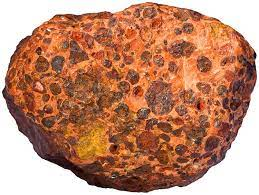
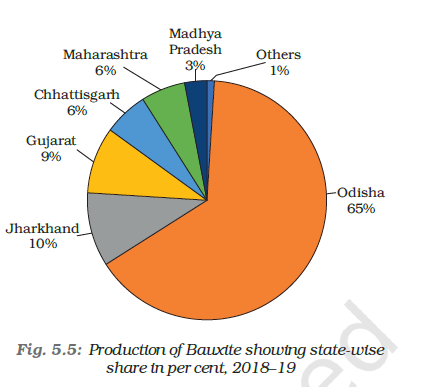

Bauxite
==> Though, several ores
contain aluminium, it
is from bauxite, a
clay-like substance
that alumina and
later aluminium is
obtained.
==>Bauxite
deposits are formed
by the decomposition
of a wide variety of
rocks rich in
aluminium silicates.
==> Aluminium is an
important metal
because it combines
the strength of metals
such as iron, with
extreme lightness
and also with good
conductivity and
great malleability.
==>India’s bauxite
deposits are mainly
found in the
Amarkantak plateau, Maikal hills and the
plateau region of Bilaspur-Katni.
==>Odisha was the largest bauxite producing
state in India in 2016-17. Panchpatmali
deposits in Koraput district are the most
important bauxite deposits in the state.


After the discovery of Aluminium
Emperor Napoleon III wore buttons and
hooks on his clothes made of aluminium
and served food to his more illustrious
guests in aluminium utensils and the
less honourable ones were served in gold
and silver utensils. Thirty years after this
incident aluminium bowls were most
common with the beggars in Paris.